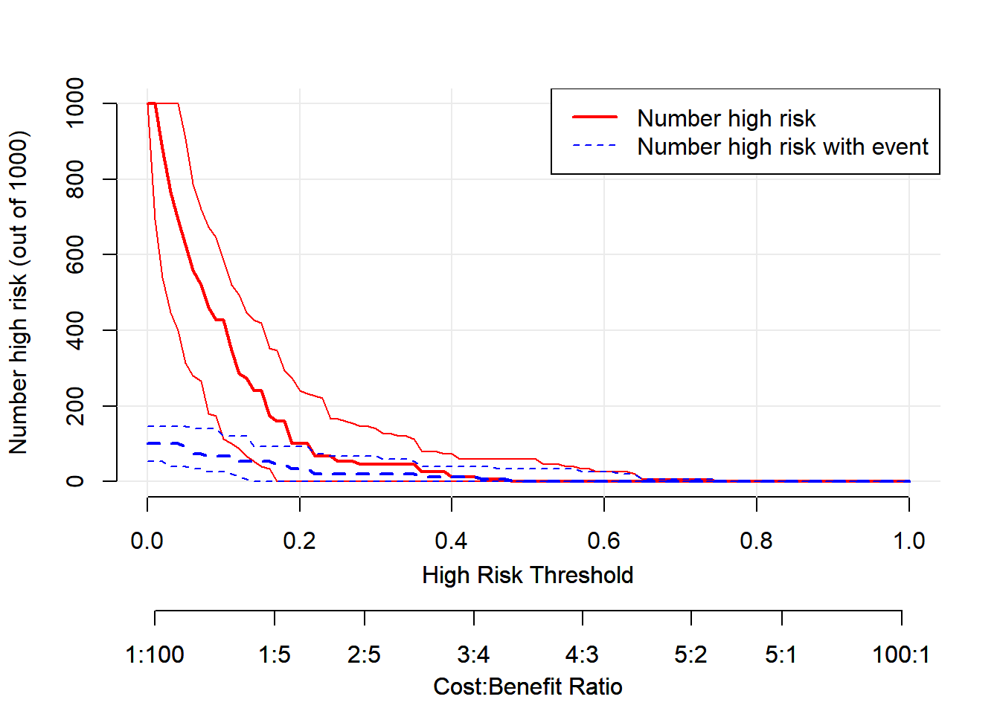

# 先安装R包
install.packages("rmda")39 分类数据的决策曲线分析
DCA，decision curve analysis，临床决策曲线分析，更佳贴近临床实际，对临床工作的开展比AUC/NRI/IDI等更具有指导意义。
我刚接触DCA的时候一个正经画DCA的R包都没有，现在R语言画DCA的方法实在是太多了，我这里只介绍了5种方法，后面再慢慢补充。大家看着喜欢哪个就用哪个吧。
39.1 方法1
使用rmda包。
使用这个包自带的一个dcaData，作为演示，这个数据集一共500行，6列，其中Cancer是结果变量，1代表患病，0代表没病，其余列是预测变量。
library(rmda)
## Warning: package 'rmda' was built under R version 4.2.3
data("dcaData")
dim(dcaData) # 500,6
## [1] 500 6
head(dcaData)
## # A tibble: 6 × 6
## Age Female Smokes Marker1 Marker2 Cancer
## <int> <dbl> <lgl> <dbl> <dbl> <int>
## 1 33 1 FALSE 0.245 1.02 0
## 2 29 1 FALSE 0.943 -0.256 0
## 3 28 1 FALSE 0.774 0.332 0
## 4 27 0 FALSE 0.406 -0.00569 0
## 5 23 1 FALSE 0.508 0.208 0
## 6 35 1 FALSE 0.186 1.41 0
str(dcaData)
## tibble [500 × 6] (S3: tbl_df/tbl/data.frame)
## $ Age : int [1:500] 33 29 28 27 23 35 34 29 35 27 ...
## $ Female : num [1:500] 1 1 1 0 1 1 1 1 1 1 ...
## $ Smokes : logi [1:500] FALSE FALSE FALSE FALSE FALSE FALSE ...
## $ Marker1: num [1:500] 0.245 0.943 0.774 0.406 0.508 ...
## $ Marker2: num [1:500] 1.02108 -0.25576 0.33184 -0.00569 0.20753 ...
## $ Cancer : int [1:500] 0 0 0 0 0 0 0 0 0 0 ...使用起来非常简单，首先构建dca，然后画图：
set.seed(123)
fit1 <- decision_curve(Cancer ~ Age + Female + Smokes, # R语言里常见的公式类型
data = dcaData,
study.design = "cohort", # 选择研究类型
bootstraps = 50 # 重抽样次数
)
## Note: The data provided is used to both fit a prediction model and to estimate the respective decision curve. This may cause bias in decision curve estimates leading to over-confidence in model performance.
# 画图
plot_decision_curve(fit1, curve.names = "fit1",
cost.benefit.axis = F, # 是否需要损失：获益比 轴
confidence.intervals = "none" # 不画可信区间
)
可以查看模型中的各个数据的值：
# 数据很大，没有展示，大家可以自己运行看看
summary(fit1)多个模型的多条DCA曲线一起绘制也是可以的：
# 新建立1个模型
set.seed(123)
fit2 <- decision_curve(Cancer~Age + Female + Smokes + Marker1 + Marker2,
data = dcaData,
bootstraps = 50
)
## Note: The data provided is used to both fit a prediction model and to estimate the respective decision curve. This may cause bias in decision curve estimates leading to over-confidence in model performance.
# 画图只要把多个模型放在1个列表中即可，还可以进行很多自定义调整
plot_decision_curve(list(fit1, fit2),
curve.names = c("fit1", "fit2"),
xlim = c(0, 1), # 可以设置x轴范围
legend.position = "topright", # 图例位置,
col = c("red","blue"), # 自定义颜色
confidence.intervals = "none",
lty = c(1,2), # 线型，注意顺序
lwd = c(3,2,2,1) #注意顺序，先是自己的模型，然后All,然后None
)
## Note: When multiple decision curves are plotted, decision curves for 'All' are calculated using the prevalence from the first DecisionCurve object in the list provided.
这个包还可以绘制临床影响曲线：
# 1次只能绘制1个模型
plot_clinical_impact(fit1,
population.size= 1000,
cost.benefit.axis = T,
n.cost.benefits= 8,
col=c('red','blue'),
confidence.intervals= T,
ylim=c(0,1000),
legend.position="topright")
这就是这个包画DCA的例子，效果还是不错的，自定义设置也很多，方便大家画出更好看的图。这个包还有很多其他功能，我们就不演示了，感兴趣的小伙伴可以自己探索哦。美中不足的是不能画生存资料的DCA。
39.2 方法2
使用这个网站给出的dca.r文件绘制DCA，需要代码的直接去网站下载即可。
注意
这个网站已经不再提供该代码的下载，我把dca.r/stdca.r这两段代码已经放在粉丝QQ群文件，需要的加群下载即可。
还是使用rmda包的数据，首先我们画一个简单的DCA，结果变量是Cancer，预测变量我们只用一个Smokes。使用起来非常简单，一句代码即可：
source("./datasets/dca.r")
df <- as.data.frame(dcaData)
dd <- dca(data = df, # 指定数据集,必须是data.frame类型
outcome="Cancer", # 指定结果变量
predictors="Smokes", # 指定预测变量
probability = F # Smokes这一列是0,1组成的二分类变量，不是概率，所以是F
)
但是如果你的预测变量不是0,1这种，或者有多个的话，这个函数就比较蛋疼了，它需要你先把预测概率算出来，才能使用这个函数。
# 建立包含多个自变量的logistic模型
model <- glm(Cancer ~ Age + Female + Smokes + Marker1 + Marker2,
family=binomial(),
data = df
)
# 算出概率
df$prob <- predict(model, type="response")
# 绘制多个预测变量的DCA
dd <- dca(data=df, outcome="Cancer", predictors="prob",
probability = T,
xstop=0.35 # 控制x轴范围
)
把多个模型画在一起的方式也有点奇怪，比如我们下面演示下3个模型画在一起，其中prob代表的是上面的model模型，Marker2代表的是只有一个预测变量Marker2的模型，Smokes代表只有一个预测变量Smokes的模型！
prob是概率，所以是T，Smokes和Marker2不是概率，所以是F。
dd <- dca(data = df, outcome="Cancer",
predictors=c("prob","Smokes","Marker2"), # 这是3个模型哦！
probability = c(T,F,F) # 和上面是对应的！
)
## [1] "Smokes converted to a probability with logistic regression. Due to linearity assumption, miscalibration may occur."
## [1] "Marker2 converted to a probability with logistic regression. Due to linearity assumption, miscalibration may occur."
39.3 方法3
上面的方法自定义选项也很少，不利于美化图形。但是呢，有一个优点就是可以直接返回画图数据，我们只要稍加修改，就能使用ggplot2画图了！而且由于直接给出了源码，我们可以试着自己修改，这样可发挥的地方就太多了！
下面几个将要介绍的方法，都是可以返回数据的，都支持使用ggplot2画图！
下面我们返回2个模型的画图数据，自己稍加整理，然后使用ggplot2画DCA，大家如果只有1个模型或者更多的模型，道理都是一样的哦，就是整成ggplot2需要的格式就行了！
# 返回模型1的画图数据
source("./datasets/dca.r")
dca_data1 <- dca(data = df,
outcome="Cancer",
predictors="prob",
probability = T,
graph = F
)然后提取数据，数据转换：
# 转换数据
library(tidyr)
dca_df1 <- dca_data1$net.benefit %>% # 画图数据就藏在这里！
# 变成长数据,还不懂长宽数据转换这个超强操作的快去翻一下历史文章！
pivot_longer(cols = -threshold, names_to = "type", values_to = "net_benefit")
# 看下数据结构
str(dca_df1)
## tibble [297 × 3] (S3: tbl_df/tbl/data.frame)
## $ threshold : num [1:297] 0.01 0.01 0.01 0.02 0.02 0.02 0.03 0.03 0.03 0.04 ...
## $ type : chr [1:297] "all" "none" "prob" "all" ...
## $ net_benefit: num [1:297] 0.111 0 0.11 0.102 0 ...画图就是非常简单了，先给大家看看只画1个模型的例子：
library(ggplot2)
## Warning: package 'ggplot2' was built under R version 4.2.3
library(ggsci)
# 以prob这个模型为例
ggplot(dca_df1, aes(threshold, net_benefit, color = type))+
geom_line(linewidth = 1.2)+
scale_color_jama(name = "Model Type")+ # c("steelblue","firebrick","green4")
scale_y_continuous(limits = c(-0.03,0.12),name = "Net Benefit")+
#限定y轴范围是重点，你可以去掉这句看看
scale_x_continuous(limits = c(0,1),name = "Threshold Probility")+
theme_bw(base_size = 16)+
theme(legend.position = c(0.8,0.8),
legend.background = element_blank()
)
## Warning: Removed 85 rows containing missing values (`geom_line()`).
看着是不是比上面的颜值都高些？是不是已经有了JAMA杂志的味道？
下面是2个模型画在一起的例子，和上面的思路一模一样！
# 构建模型2
mod2 <- glm(Cancer ~ Marker1 + Age + Smokes, df, family = binomial)
df$model2 <- predict(mod2, type="response")
# 返回两个模型的画图数据
dca12 <- dca(data = df,
outcome="Cancer",
predictors=c("prob","model2") ,
probability = c(T,T),
graph = F
)
# 合并数据，大家可以打开这2个数据看下，可以直接合并
library(dplyr)
## Warning: package 'dplyr' was built under R version 4.2.3
##
## Attaching package: 'dplyr'
## The following objects are masked from 'package:stats':
##
## filter, lag
## The following objects are masked from 'package:base':
##
## intersect, setdiff, setequal, union
dca_df_all <- dca12$net.benefit %>%
pivot_longer(cols = -threshold,names_to = "models",values_to = "net_benefit")
glimpse(dca_df_all)
## Rows: 396
## Columns: 3
## $ threshold <dbl> 0.01, 0.01, 0.01, 0.01, 0.02, 0.02, 0.02, 0.02, 0.03, 0.03…
## $ models <chr> "all", "none", "prob", "model2", "all", "none", "prob", "m…
## $ net_benefit <dbl> 0.11111111, 0.00000000, 0.10957576, 0.11111111, 0.10204082…画图也是一样的简单：
ggplot(dca_df_all, aes(threshold, net_benefit, color = models))+
#geom_line(size = 1.2)+
stat_smooth(method = "loess", se = FALSE, formula = "y ~ x", span = 0.2)+
# 灵感来自于方法5！
scale_color_jama(name = "Model Type")+
scale_y_continuous(limits = c(-0.03,0.12),name = "Net Benefit")+
scale_x_continuous(limits = c(0,1),name = "Threshold Probility")+
theme_bw(base_size = 16)+
theme(legend.position = c(0.8,0.75),
legend.background = element_blank()
)
## Warning: Removed 85 rows containing non-finite values (`stat_smooth()`).
## Warning in simpleLoess(y, x, w, span, degree = degree, parametric = parametric,
## : span too small. fewer data values than degrees of freedom.
## Warning in simpleLoess(y, x, w, span, degree = degree, parametric = parametric,
## : pseudoinverse used at 0.00935
## Warning in simpleLoess(y, x, w, span, degree = degree, parametric = parametric,
## : neighborhood radius 0.01065
## Warning in simpleLoess(y, x, w, span, degree = degree, parametric = parametric,
## : reciprocal condition number 0
## Warning in simpleLoess(y, x, w, span, degree = degree, parametric = parametric,
## : There are other near singularities as well. 0.00011342挺好，还是不错的，能直接返回数据的都是可以高度自定义的，配合ggplot2，你可以尽情发挥。
在今天推荐的所有方法中，这个方法我是最喜欢的，虽然只有一段代码，连个正经的R包都没有，但是很明显这个方法的潜力最大！只要你会自己修改，那这个方法就是万能的，适合很多模型的DCA绘制！
39.4 方法4
使用ggDCA包，和上面的提取数据再画图有点像，不过它给你简化了，一句代码即可，省事儿！
# 安装R包，使用有问题的小伙伴请安装github版本
install.packages("ggDCA")
remotes::install_github('yikeshu0611/ggDCA')还是使用rmda包里面自带的dcaData演示。
library(ggDCA)
##
## Attaching package: 'ggDCA'
## The following object is masked _by_ '.GlobalEnv':
##
## dca
library(rmda)
# 构建模型
fit1 <- glm(Cancer ~ Age + Female + Smokes, data = dcaData, family = binomial())
fit2 <- glm(Cancer~Age + Female + Smokes + Marker1 + Marker2,
data = dcaData,family = binomial())画图，非常简洁！
library(ggplot2)
dca1 <- ggDCA::dca(fit1)
ggplot(dca1)
## Warning: Removed 18 rows containing missing values (`geom_line()`).大家可以使用ggplot2语法继续修改细节，在此之前先给大家看看这个dca1的数据结构。
str(dca1)
## Classes 'dca.lrm' and 'data.frame': 188 obs. of 5 variables:
## $ thresholds: num 0.021 0.0228 0.0251 0.0272 0.0298 ...
## $ TPR : num 0.12 0.12 0.12 0.118 0.118 0.116 0.112 0.112 0.112 0.112 ...
## $ FPR : num 0.88 0.85 0.832 0.806 0.784 0.758 0.732 0.7 0.67 0.648 ...
## $ NB : num 0.1011 0.1001 0.0986 0.0955 0.0939 ...
## $ model : Factor w/ 3 levels "fit1","All","None": 1 1 1 1 1 1 1 1 1 1 ...还自动算出了TPR和FPR，如果你想画ROC的话也是一句代码的事，咱就不演示了！就给大家演示下怎么自定义细节。
ggplot(dca1,linetype = 1,color = c("firebrick","steelblue","green4"))+
theme(legend.position = c(0.8,0.75))
## Warning: Removed 18 rows containing missing values (`geom_line()`).
多个模型画在一起也是非常简单！
# 2个模型画在一起
dca12 <- ggDCA::dca(fit1,fit2)
ggplot(dca12, linetype = 1,color = c("firebrick","steelblue","green4","tomato"))+
theme(legend.position = c(0.8,0.75))
## Warning: Removed 131 rows containing missing values (`geom_line()`).
简洁强大！
39.5 方法5
使用dcurves包。
# 安装,2选1
install.packages("dcurves")
# install.packages("devtools")
devtools::install_github("ddsjoberg/dcurves")还是使用rmda包的dcaData数据进行演示。
和dca.r的使用很像。废话不多说了，直接上 画2个模型DCA 的代码。
library(dcurves)
## Warning: package 'dcurves' was built under R version 4.2.3
##
## Attaching package: 'dcurves'
## The following object is masked _by_ '.GlobalEnv':
##
## dca
## The following object is masked from 'package:ggDCA':
##
## dca
library(rmda)
data("dcaData")
# 建立2个模型，算出概率
mod1 <- glm(Cancer ~ Marker1 + Age + Smokes, dcaData, family = binomial)
dcaData$model1 <- predict(mod1, type="response")
mod2 <- glm(Cancer ~ Marker1 + Marker2 + Age + Smokes + Female,
dcaData, family = binomial)
dcaData$model2 <- predict(mod2, type="response")
dcurves::dca(Cancer ~ model1 + model2,
data = dcaData
) %>%
plot(smooth = T,
show_ggplot_code = T # 显示ggplot2代码，方便大家自己调整
)
## Assuming '1' is [Event] and '0' is [non-Event]
## # ggplot2 code to create DCA figure -------------------------------
## as_tibble(x) %>%
## dplyr::filter(!is.na(net_benefit)) %>%
## ggplot(aes(x = threshold, y = net_benefit, color = label)) +
## stat_smooth(method = "loess", se = FALSE, formula = "y ~ x",
## span = 0.2) +
## coord_cartesian(ylim = c(-0.012, 0.12)) +
## scale_x_continuous(labels = scales::percent_format(accuracy = 1)) +
## labs(x = "Threshold Probability", y = "Net Benefit", color = "") +
## theme_bw()
大家看到ggplot2的代码了吧？自己调整就可以了。
今天就给大家简单介绍下logistic回归DCA的5种画法，其实还有很多，留着以后再介绍吧，实在是写不动了。。除了常见的logistic、cox，其实随机森林、决策树、lasso、xgboost、SVM等很多模型都是可以绘制DCA的，更多进阶内容可以关注公众号查看。